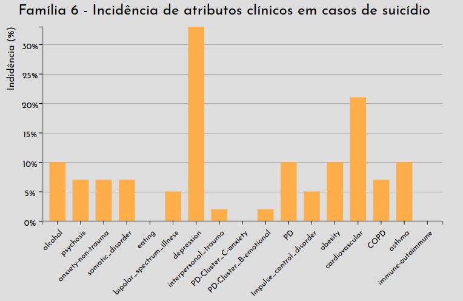

Descrição do Desafio e Abordagens
Dados os dois datasets "Family Attributes" e "Family Structure", tarefas foram especificadas para a criação de uma ferramenta de visualização:
- (1) Para um determinado indivíduo-alvo, identifique casos semelhantes, incluindo como eles estão relacionados entre si (por exemplo, se eles co-ocorrem em uma determinada família).
- (2) Caracterizar a distribuição de atributos clínicos para casos de suicídio em famílias com altas taxas de incidência (alto número relativo de casos).
- (3) Caracterizar (ou seja, a relação entre os casos e seus atributos) casos de suicídio em famílias com alta incidência de um determinado atributo clínico (como depressão).
- (4) Compare as informações clínicas para casos de suicídio com seus parentes imediatos (irmãos, pais e filhos).
Abaixo são descritas as estratégias utilizadas para resolver estas tarefas.
Árvores Genealógicas
Árvores genealógicas são muito úteis para visualizar a estrutura geral de uma família e
também explorar individualmente seus integrantes. Famílias quando analisadas somente em
um contexto geral podem ocultar informações importantes para auxiliar profissionais em
diagnósticos médicos. Tendo em vista estes benefícios, foi proposta uma visualização em
árvore para cada família, contando com as seguintes características:
- Filtragem de atributos clínicos específicos, onde os nodos filtrados são incrementados em opacidade e diâmetro do círculo.
- Interatividade, apresentando características e atributos individuais ao deslizar com o mouse sobre os nodos.

A figura acima apresenta a visão geral da ferramenta para a "família nove", onde em
(1) é possível selecionar os filtros para os atributos clínicos, de forma que caso a pessoa contenha ao menos um destes atributos será então destacada na árvore. Em
(2) é apresentada uma breve descrição técnica da família, indicando erros do dataset ou relatando demais indivíduos não apresentados na árvore (como a presença múltiplos cônjuges, limitada pela visualização). Por fim, em
(3) é apresentada a árvore genealógica e um exemplo de interatividade com o mouse que descreve as características de uma pessoa com depressão desta família (ID 13789).
Com a utilização das árvores genealógicas é possível identificar rapidamente
casos semelhantes em uma família, e ainda deixar a critério do usuário a escolha do grau de
parentesco analisado (irmão, pai, avô, tios, etc.). Esta estratégia foi desenvolvida visando
as tarefas (1) e (4) apresentadas acima. A ferramenta encontra-se disponível na página
Árvores Genealógicas.
Gráficos de Barras
Gráficos de barras são altamente recomendáveis quando se precisa comparar dados,
a partir deles nossa cérebro consegue ter uma melhor percepção das diferenças entre
os dados apresentados. Esta estratégia foi desenvolvida visando as tarefas (1) e (4) apresentadas acima.
E, neste trabalho, utilizamos os gráficos de barras na seguintes situações:
- Gráficos por famílias onde apresentamos a porcentagem da presença de alguns atributos clínicos em casos de suicídio em uma família em específico, de forma a permitir ao usuário analisar facilmente quais atributos clínicos são mais presentes em cada família. Os gráficos disponíveis nessa abordagem encontram-se na página Gráficos: Famílias.
- Gráficos por atributos clínicos, que de maneira semelhante à anterior, apresenta a porcentagem da presença de um atributo clínicos em casos de suicídio em relação às famílias analisadas, permitindo ao usuário visualizar quais atributos clínicos afetam mais uma família do que as demais, além ilustrar quais atributos aparecem em maior escala e quais são mais recorrentes. Os gráficos disponíveis nessa abordagem encontram-se na página Gráficos: Atributos Clínicos.
Abaixo é apresentado o gráfico para a "família seis":

Abaixo é apresentado o gráfico para o atributo "depressão":